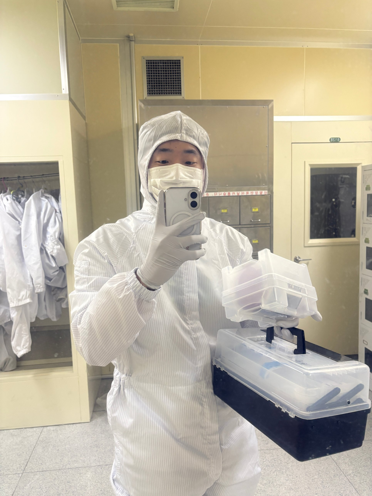
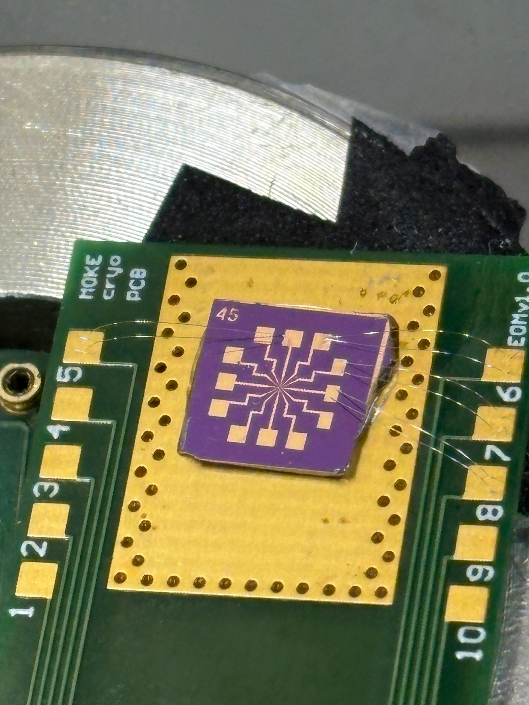

KIST
Research Intern, Quantum-material Spintronics Group, Center for Semiconductor TechnologyAdvisor: Dr. Jun Woo Choi
- Fabrication: glovebox exfoliation and dry transfer, cleanroom processing, device layout in CAD.
- Measurement: MOKE, Raman, AFM, PPMS, probe station.
- Analysis and simulation: Python tools for TEM and Lorentz TEM, MuMax3.
Coming from industry, I learned here to start from an open question and to build both the experiments and the tools to answer it.

